Extrato
Observação
Os relatórios no painel do comércio são limitado a 20 mil linhas para exibição e download. Se você precisar exibir mais linhas ou colunas no relatório, entre em contato com seu representante de vendas.O que é o Extrato?
O Extrato ajuda a identificar os movimentos (descontos de comissão, taxas de transferência, reembolsos) de sua conta PayU. Este relatório mostra o resumo da conta, com débitos e créditos realizados no mês, e informações do saldo disponível.
Além disso, o the Extrato ajuda a área contábil a conciliar todas as operações de comércio eletrônico.
Permissão necessária
Para ter acesso a este módulo, você precisa ter um perfil com as seguintes permissões habilitadas
- Declarações > Relatório de Balanço
- Declarações > Baixar o relatório CSV
Essa permissão deve ser habilitada para que você baixe o relatório.
Consulte Perfis e permissões para obter mais informações.
Consulte o relatório
Faça login em sua conta PayU. No menu esquerdo, expanda o menu Transações e selecione Extrato. Por padrão, o relatório mostra as informações de operação* dos últimos 30 dias, do mais recente ao mais antigo.
*Limitado aos 20 mil registros principais.
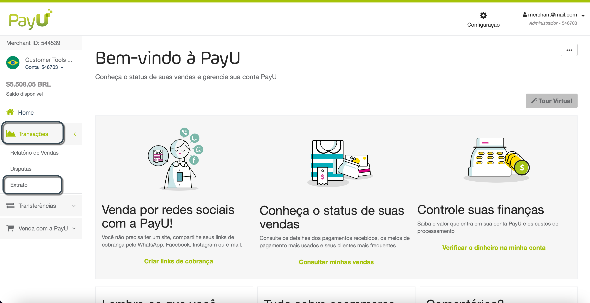
A seção Balanço financeiro é dividida em três partes da seguinte forma:
Saldo Geral
A primeira parte é o saldo geral, onde você pode ver os fundos em sua conta PayU, e um botão para permitir que você solicite uma transferênca para sua conta bancária.
O saldo geral, que é composto por:
- Saldo disponível: saldo disponível em conta, após desconto de tarifa PayU e outros encargos
- Saldo congelado: os fundos que fazem parte de uma disputa em andamento ou ordem de reembolso não aprovado solicitado por seus clientes.
- Total balance: o total de fundos recebidos em sua conta PayU. It consists of the Saldo disponível mais o Saldo congelado.
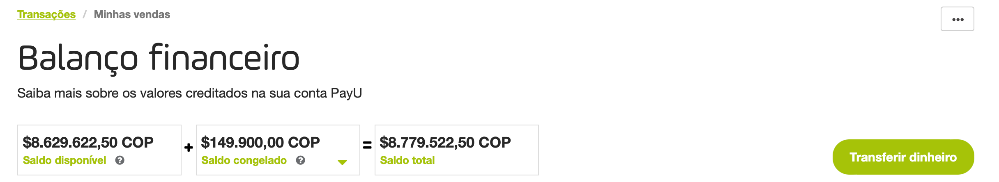
Gráfico de vendas realizadas
Na segunda parte, você pode entender a distribuição dos custos (incluindo impostos e custos relacionados à transação) e analisar um gráfico de vendas e um gráfico de pizza que resumem todas essas informações.
Os gráficos mostram as informações disponíveis no período selecionado.
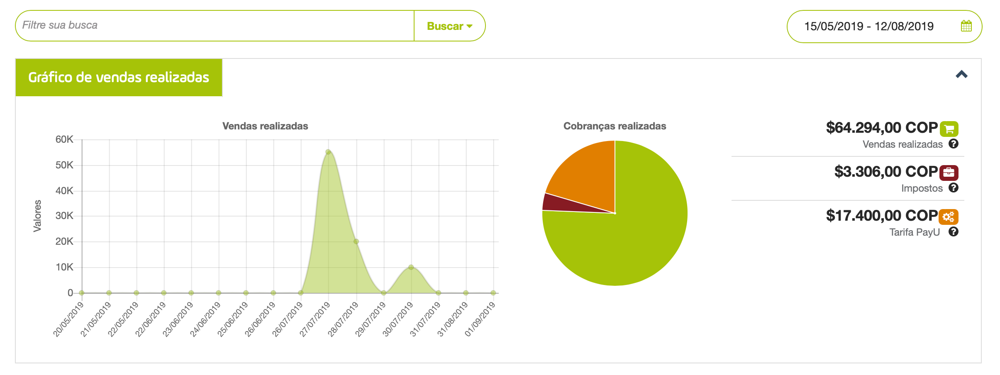
O gráfico de pizza fornece as seguintes informações:
- Vendas realizadas: valor total das suas vendas antes de impostos e taxa PayU, seus rendimentos durante o período consultado.
- Impostos: encargos adicionais gerados de acordo com seu regime tributário. Se o seu regime tributário for diferente, entre em contato sac@payu.com.
- Tarifa PayU: Custo de processamento PayU, incluindo a porcentagem de vendas mais a taxa fixa aplicada à sua conta.
Report table
Na última parte abaixo dos gráficos, você encontra uma tabela com os dados de crédito e débito das últimas operações. Você pode ver o tipo de operação e o valor (crédito ou débito) de cada linha.
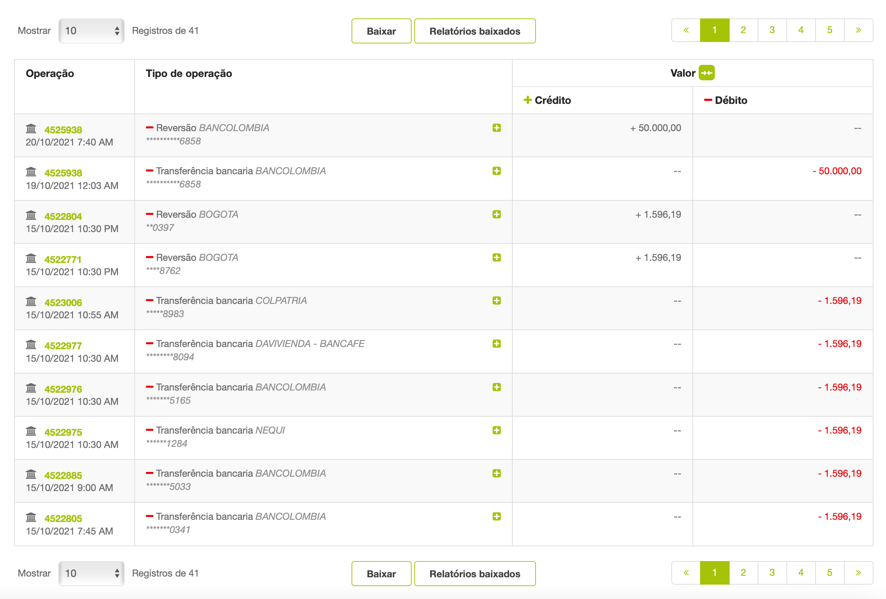
O relatório tem as seguintes colunas:
| Operação | Descrição |
|---|---|
| Operation | ID e data da operação. |
| Tipo de operação | Informações da operação. Dependendo do tipo, as informações exibidas variam. Clique para expandir os valores detalhados da operação nas colunas Débito e Crédito. 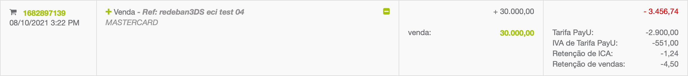 |
| Crédito | Valor creditado na sua conta. |
| Débito | Valor debitado da sua conta. |
Observação
Clique em ao lado da etiqueta Valor para mesclar débito e crédito; o valor resultante é o débito menos o valor positivo de crédito.
Por exemplo, se o o valor da coluna débito é $3.296,63 e o valor da coluna crédito é $950,00, o valor da coluna resultante após mesclar é $2.346,63.
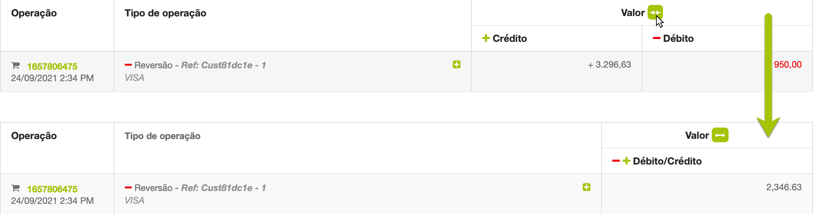
Filtrar o relatório
Você pode usar a barra de pesquisa acima do gráfico ou o calendário para definir filtros. Você pode filtrar por Tipo de operação, ID venda ou saque, Referência*, ou Tipo de meio de pagamento*.
* Esses filtros são exibidos quando o Tipo de operação é Venda, Reversão, ou Chargeback.
Para definir um filtro, clique no campo Filtre sua busca na parte superior do gráfico de vendas realizadas.
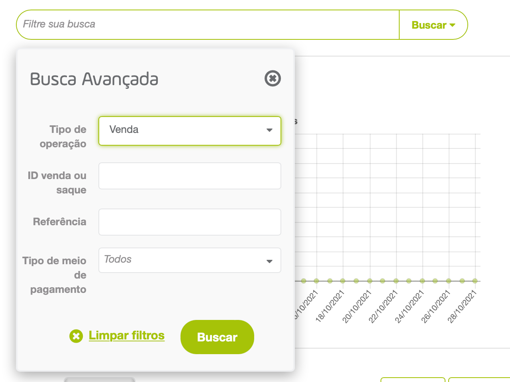
Configure os valores para os filtros e clique em Buscar. Depois de clicar, a tabela do filtro mostra as operações que atendem aos critérios selecionados.
Além desses filtros, você pode definir um período em que o comprador realizou a venda usando o filtro de datas no canto superior direito. O período é definido aqui
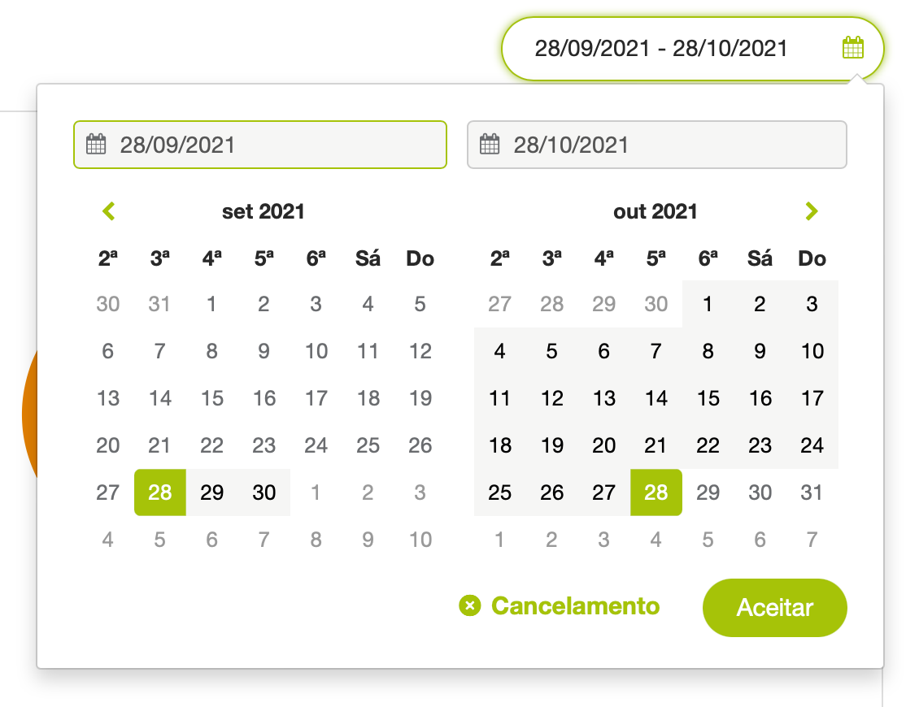
O intervalo de datas deste filtro é três (3) meses antes da data de término. Se você exceder esse intervalo, o relatório exibirá as informações de três (3) meses após a data de início.
Para ver as informações de uma determinada data, defina a mesma para a data de início e de término.
Baixar o relatório
Para baixar o relatório, clique no botão Baixar localizado na parte superior ou inferior da tabela do relatório.
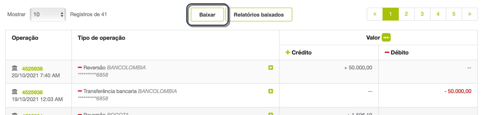
Uma janela pop-up aparecerá onde você pode selecionar as opções para gerar o relatório*.
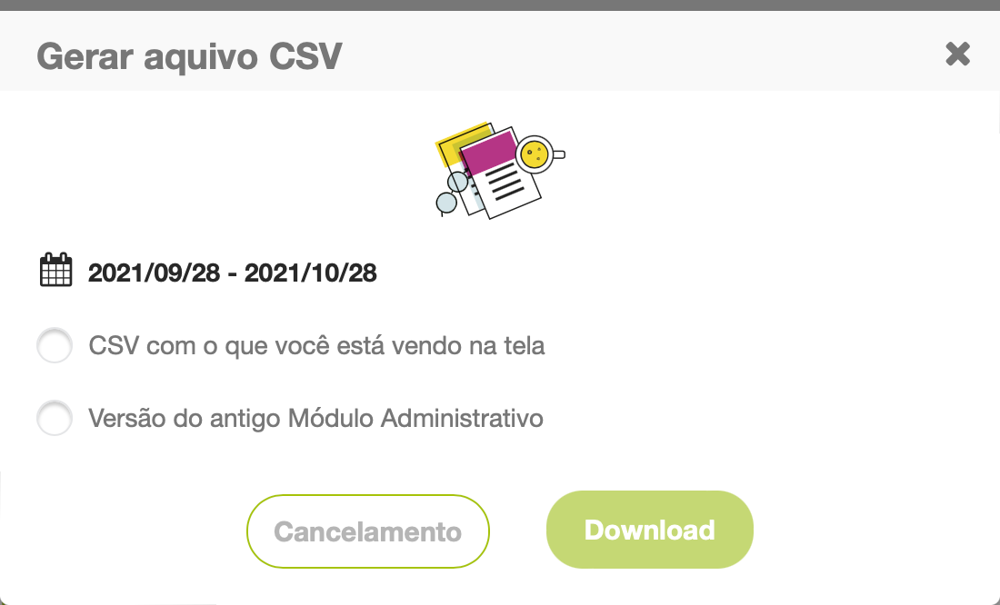Observação
* Caso o formato do arquivo não atenda às suas necessidades, entre em contato com o seu executivo de vendas para saber mais sobre a opção de envio de arquivos por SFTP e os modelos que temos para este relatório.O relatório é baixado automaticamente em formato Excel (.csv). O nome do relatório usa os seguintes formatos:
- CSV com o que você está vendo na tela option: [DataDeDownloadEmMilis]_statement_report_[AccountId].csv
- Versão do antigo Módulo Administrativo option: [AccountId]_[DataDeDownload]_transactions.csv*
* Data de download em formato dd-mm-yy-hh-mm-ss
No relatório baixado, você pode validar todos os créditos e débitos da sua conta, bem como conciliar as comissões do PayU que constam na fatura recebida mensalmente.
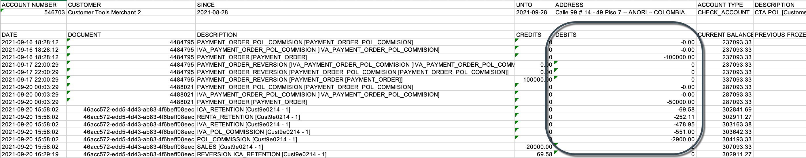 Comissões e impostos PayU aparecem na fatura
Para reconciliar as informações com o relatório de vendas, você pode usar a variável ReferenceCode que aparece entre colchetes na transação.
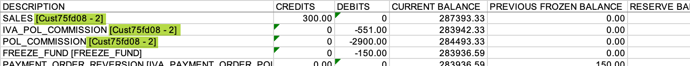
No relatório gerado, você encontra os seguintes conceitos.
| Conceito | Descrição |
|---|---|
| SALES | Valor aprovado da transação. |
| POL_COMMISSION | Comissão PayU: Percentual fixo estabelecido para negociação, mais o valor fixo estabelecido. |
| IVA_POL_COMMISSION | Comissão tributária. |
| IVA_RETENTION | Retenção de IVA.* |
| RENTA_RETENTION | Retenção retefuente.* |
| ICA_RETENTION | Retenção de ICA.* |
| RETENTION SALES | Reembolso da transação. |
| RETENTION POL_COMMISSION | Reembolso da Comissão PayU. |
| RETENTION IVA_POL_COMMISSION | Reembolso do imposto de comissão PayU. |
| RETENTION IVA_RETENTION | Reembolso da retenção do IVA. |
| RETENTION RENTA_RETENTION | Reembolso da retenção Retefuente. |
| RETENTION ICA_RETENTION | Reembolso da retenção do ICA. |
| PAYMENT_ORDER | Transferência do saldo disponível para a conta bancária cadastrada. |
| PAYMENT_ORDER_POL_COMMISSION | Custo de transferência. |
| IVA_PAYMENT_ORDER_POL_COMMISSION | Imposto de transferência. |
| FREEZE_FUND | Saldo congelado (reembolsos ou disputas). |
| UNFREEZE_FUND | Liberação dos valores congelados. |
| CHARGEBACK | Estorno ou disputa perdida. |
| DISCRETIONARY | Movimento sujeito a critério ou crédito adicional à conta. |
* Válido apenas a transações com cartão de crédito.